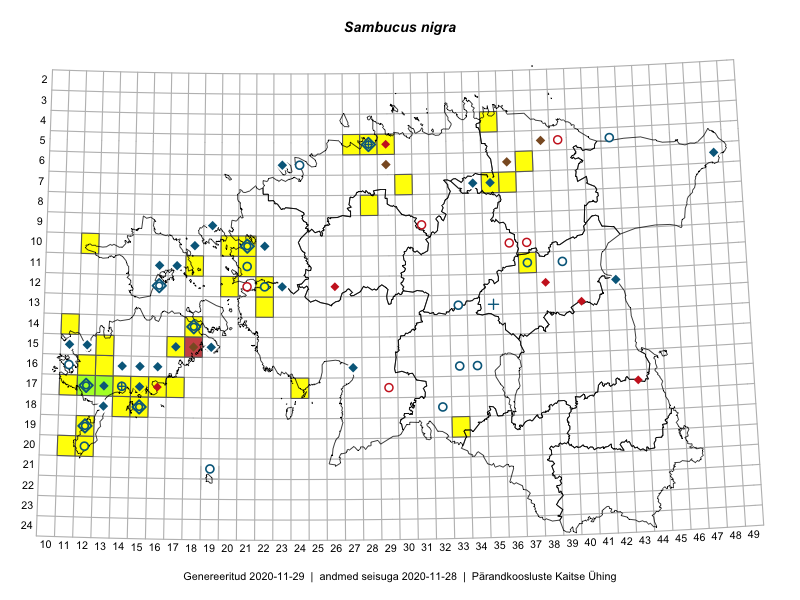

Sambucus nigra — must leeder
Kaardile koondatud taksonid: Sambucus nigra L. (77)

Kaart põhineb 77 kirjel, neist:
vaatlusi 74
eksemplare 3
Kaasaegsed1 leiukohad asuvad 34 ruudus.
Andmed “Eesti taimede levikuatlasest”,2 sulgudes ruutude arv:3
● 1971–2005 (34)
○ 1921–1970 (18)
△ kuni 1920 (0)
+ hävinud (0)
? kaheldav (0)
Lisaruudud teistest andmebaasidest:4
ELF: 2006– . . . (0)
PKÜ: 2006– . . . (0)
ELF: 1971–2005 (1)
PKÜ: 1997–2005 (4)
| Ruut | Vaatleja(d) | Vaatlusaeg | Kirje PlutoFis |
|---|---|---|---|
| 20-11 | Toomas Kukk, Peedu Saar | 2015-08-05 | ruut/ala: Sambucus nigra L. |
| 12-20 | Ott Luuk | 2014-07-24 | ruut/ala: Sambucus nigra L. |
| 12-22 | Ott Luuk, Jaak-Albert Metsoja | 2015-05-27 | ruut/ala: Sambucus nigra L. |
| 17-12 | Toomas Kukk, Mari Reitalu | 2014-06-20 | ruut/ala: Sambucus nigra L. |
| 18-15 | Toomas Kukk | 2014-06-18 | ruut/ala: Sambucus nigra L. |
| 18-14 | Toomas Kukk | 2014-06-18 | ruut/ala: Sambucus nigra L. |
| 13-22 | Kirsi Loide, Marje Loide | 2015-04-17 | ruut/ala: Sambucus nigra L. |
| 05-27 | Erkki Otsman, Sergei Smirnov | 2015-07-08 | ruut/ala: Sambucus nigra L. |
| 11-37 | Ülle Jõgar, Illi Tarmu, K. Rünk | 2015-07-24 | ruut/ala: Sambucus nigra L. |
| 17-15 | Sirje Azarov, Aira Alasi | 2015-04-11 | ruut/ala: Sambucus nigra L. |
| 19-12 | Oliver Parrest | 2015-05-16 | ruut/ala: Sambucus nigra L. |
| 14-11 | Mari Reitalu, Triin Reitalu | 2015-05-24 | ruut/ala: Sambucus nigra L. |
| 13-22 | Kirsi Loide, Marje Loide | 2015-08-10 | ruut/ala: Sambucus nigra L. |
| 20-12 | Mari Reitalu, Oliver Parrest | 2015-05-26 | ruut/ala: Sambucus nigra L. |
| 20-12 | Triin Reitalu, Sirje Azarov | 2015-05-30 | ruut/ala: Sambucus nigra L. |
| 17-14 | Sirje Azarov, Mari Reitalu | 2015-04-27 | ruut/ala: Sambucus nigra L. |
| 16-13 | Sirje Azarov, Aira Alasi | 2015-07-20 | ruut/ala: Sambucus nigra L. |
| 14-18 | Karin Kikas, Elle Rajandu | 2015-07-21 | ruut/ala: Sambucus nigra L. |
| 18-14 | Mari Reitalu, Triin Reitalu | 2014-07-17 | ruut/ala: Sambucus nigra L. |
| 18-15 | Mari Reitalu | 2014-07-17 | ruut/ala: Sambucus nigra L. |
| 17-14 | Karin Kikas, Elle Rajandu | 2015-07-22 | ruut/ala: Sambucus nigra L. |
| 05-29 | Peedu Saar, Sander Laherand | 2013-07-07 | ruut/ala: Sambucus nigra L. |
| 11-21 | Hanna-Eliisa Luts, Tõnu Ploompuu | 2015-08-13 | ruut/ala: Sambucus nigra L. |
| 10-20 | Tõnu Ploompuu, Anna-Grete Rebane, Hanna-Eliisa Luts | 2015-07-20 | ruut/ala: Sambucus nigra L. |
| 10-21 | Tõnu Ploompuu | 2015-05-02 | ruut/ala: Sambucus nigra L. |
| 10-20 | Tõnu Ploompuu | 2015-05-02 | ruut/ala: Sambucus nigra L. |
| 10-21 | Tõnu Ploompuu | 2015-08-21 | ruut/ala: Sambucus nigra L. |
| 17-17 | Toomas Kukk, Meeli Mesipuu | 2016-08-12 | ruut/ala: Sambucus nigra L. |
| 17-16 | Toomas Kukk, Meeli Mesipuu | 2016-08-12 | ruut/ala: Sambucus nigra L. |
| 07-30 | Toomas Kukk, Peedu Saar | 2016-09-09 | ruut/ala: Sambucus nigra L. |
| 20-12 | Mari Reitalu, Sirje Azarov | 2016-08-08 | ruut/ala: Sambucus nigra L. |
| 18-15 | Peedu Saar | 2016-08-30 | ruut/ala: Sambucus nigra L. |
| 17-24 | Tiit Hallikma, Tõnu Ploompuu | 2016-07-06 | ruut/ala: Sambucus nigra L. |
| 04-35 | Tõnu Ploompuu | 2016-07-16 | ruut/ala: Sambucus nigra L. |
| 18-14 | Ott Luuk | 2016-08-30 | ruut/ala: Sambucus nigra L. |
| 15-13 | Meeli Mesipuu, Toomas Kukk, Mari Reitalu | 2016-10-06 | ruut/ala: Sambucus nigra L. |
| 10-20 | Herdis Fridolin | 2015-08-04 | ruut/ala: Sambucus nigra L. |
| 10-12 | Toomas Kukk, Indrek Tammekänd | 2017-09-12 | ruut/ala: Sambucus nigra L. |
| 20-11 | Toomas Kukk | 2015-08-06 | punkt: Sambucus nigra L. |
| 12-20 | Ott Luuk | 2014-07-25 | punkt: Sambucus nigra L. |
| 17-12 | Toomas Kukk, Mari Reitalu | 2014-06-20 | punkt: Sambucus nigra L. |
| 05-28 | Erkki Otsman, Sergei Smirnov | 2015-06-26 | ruut/ala: Sambucus nigra L. |
| 17-15 | Sirje Azarov, Aira Alasi | 2015-04-11 | punkt: Sambucus nigra L. |
| 14-11 | Mari Reitalu, Triin Reitalu | 2015-05-25 | punkt: Sambucus nigra L. |
| 20-12 | Triin Reitalu | 2015-05-30 | punkt: Sambucus nigra L. |
| 17-14 | Sirje Azarov, Mari Reitalu | 2015-05-27 | punkt: Sambucus nigra L. |
| 17-14 | Sirje Azarov, Mari Reitalu | 2015-05-27 | punkt: Sambucus nigra L. |
| 05-27 | Erkki Otsman, Sergei Smirnov | 2015-07-08 | punkt: Sambucus nigra L. |
| 16-13 | Sirje Azarov, Aira Alasi | 2015-07-20 | punkt: Sambucus nigra L. |
| 17-14 | Elle Rajandu, Karin Kikas | 2015-07-22 | punkt: Sambucus nigra L. |
| 17-14 | Elle Rajandu, Karin Kikas | 2015-07-22 | punkt: Sambucus nigra L. |
| 14-18 | Karin Kikas, Elle Rajandu | 2015-07-21 | punkt: Sambucus nigra L. |
| 11-37 | Ülle Jõgar, Illi Tarmu, Kai Rünk | 2015-07-24 | punkt: Sambucus nigra L. |
| 20-12 | Oliver Parrest, Mari Reitalu | 2015-05-26 | punkt: Sambucus nigra L. |
| 17-16 | Meeli Mesipuu, Toomas Kukk | 2016-08-12 | punkt: Sambucus nigra L. |
| 07-36 | Karin Kikas, Elle Rajandu | 2016-06-27 | punkt: Sambucus nigra L. |
| 06-37 | Karin Kikas, Elle Rajandu | 2016-06-28 | punkt: Sambucus nigra L. |
| 06-37 | Karin Kikas, Elle Rajandu | 2016-06-28 | punkt: Sambucus nigra L. |
| 07-35 | Karin Kikas, Elle Rajandu | 2016-06-29 | punkt: Sambucus nigra L. |
| 20-12 | Sirje Azarov, Mari Reitalu | 2016-08-08 | punkt: Sambucus nigra L. |
| 20-12 | Sirje Azarov, Mari Reitalu | 2016-08-08 | punkt: Sambucus nigra L. |
| 07-30 | Peedu Saar, Toomas Kukk | 2016-09-09 | punkt: Sambucus nigra L. |
| 18-15 | Peedu Saar | 2016-08-30 | punkt: Sambucus nigra L. |
| 04-35 | Tõnu Ploompuu | 2016-07-16 | punkt: Sambucus nigra L. |
| 18-14 | Ott Luuk | 2016-08-30 | punkt: Sambucus nigra L. |
| 17-24 | Tiit Hallikma, Tõnu Ploompuu | 2016-07-06 | punkt: Sambucus nigra L. |
| 12-22 | Jaak-Albert Metsoja, Ott Luuk | 2015-05-27 | punkt: Sambucus nigra L. |
| 10-21 | Tõnu Ploompuu | 2015-08-21 | punkt: Sambucus nigra L. |
| 10-21 | Tõnu Ploompuu | 2015-08-21 | punkt: Sambucus nigra L. |
| 11-21 | Hanna-Eliisa Luts, Tõnu Ploompuu | 2015-08-13 | punkt: Sambucus nigra L. |
| 10-12 | Toomas Kukk, Indrek Tammekänd | 2017-09-12 | punkt: Sambucus nigra L. |
| 11-18 | Toomas Kukk | 2018-07-09 | punkt: Sambucus nigra L. |
| 17-11 | Mari Reitalu | 2018-09-21 | punkt: Sambucus nigra L. |
| 16-13 | Mari Reitalu | 2019-09-30 | ruut/ala: Sambucus nigra L. |
| 17-12 | Toomas Kukk | 2014-06-29 | TAA0113319: Sambucus nigra L. |
| 17-12 | Toomas Kukk | 2014-06-29 | TAA0113320: Sambucus nigra L. |
| 17-13 | Raivo Kalle | 2014-08-25 | TAA0119785: Sambucus nigra L. |
Kaasaegsed leiukohad (tähistatud värvitud ruutudega) põhinevad peamiselt 2014–2019 välitööandmetel. Väiksemal määral on andmebaasi kantud vanemaid leiuandmeid aastatest 2006–2013.↩︎
Kukk, T., Kull, T., Eesti taimede levikuatlas. Eesti Maaülikool, Põllumajandus- ja Keskkonnainstituut, Tartu, 2005.↩︎
NB! 2005. aasta atlase andmestikus katavad uuemad leiud vanemaid. Näiteks kui liik on ruudus registreeritud 1971–2005, siis pole võimalik öelda, kas ta oli sellest ruudust teada ka enne 1970. aastat. Vana atlase andmetel hävinud ja kaheldavaid leiukohti pole hilisemate (taas)leidude põhjal korrigeeritud.↩︎
Eestimaa Looduse Fondi (ELF) ja Pärandkoosluste Kaitse Ühingu (PKÜ) andmebaasid sisaldavad inventeeritud koosluste kirjeldusi ja liigiloendeid. Neist andmekogudest on kaardile lisatud lisatud vaid need ruudud, millest uue atlase andmekogus taksoni kohta kirjeid veel pole. Kõrvale on jäetud teadaolevalt kaheldavad määrangud. Kaartidel katavad uuema perioodi andmed vanemaid, PKÜ omad ELFi omi. Kattumise tõttu võib kaardil näha olla vähem mingi kategooria ruute kui legendis olev arv näitab. ELFi ja PKÜ andmed ei kajastu hetkel vaatluste tabelis ega ruutude liigiloendites.↩︎